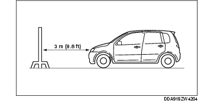

Headlight aiming
1. Set up a white screen as shown in the figure for aiming the headlights.

2. Adjust the tire pressure to the specification.
3. Position the unloaded vehicle on a flat, level surface.
4. Seat one person in the driver's seat.
5. Position the vehicle straight ahead and perpendicular to the white screen.
6. Set the headlights 3 m {9.8 ft} from the white screen.

7. Place an object in front of the headlight not being adjusted to block its light beam.
8. Start the engine so that the battery remains charged.
9. Turn on the low-beam headlight.
10. Set the headlight leveling switch to the 0 position. (Vehicles with headlight leveling switch)
11. Adjust the headlight by loosening the adjusting screws as shown in the figure.
- • Loosen/tighten the up/down adjustment screw after adjusting the left/right direction screw because it also moves in the up/down direction when the left/right adjustment screw is loosened/tightened.

12. Verify that the luminosity at the measurement point is 6400 cd or more.
- • If the luminosity is less than 6400 cd, turn the aiming adjustment screws so that the elbow point is in the area (shaded area) shown in the figure, and the luminosity at the measuring point is 6400 cd or more.